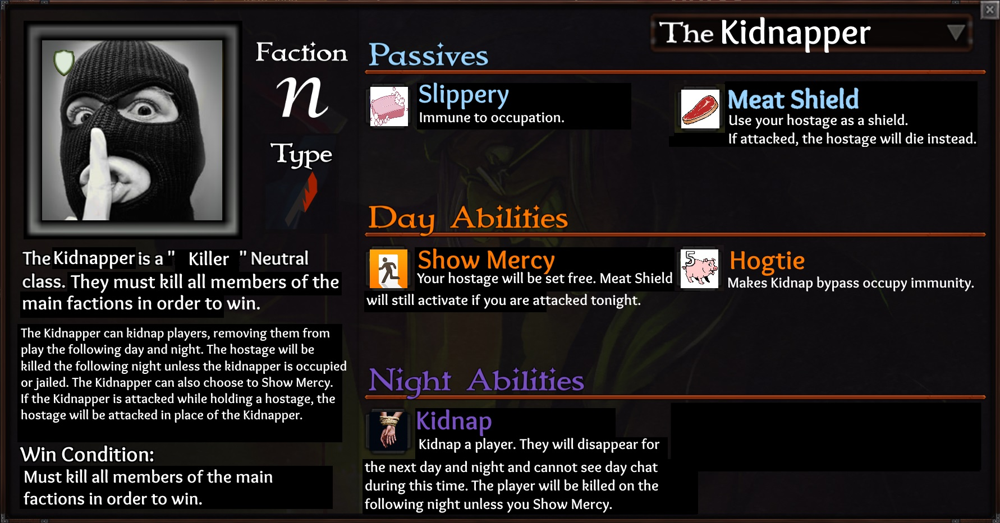

Refer to this post until I can incorporate the adjusted information here (they’re mostly the same):
https://forum.imperium42.com/t/class-suggestion-the-kidnapper-neutral-offensive/38276
Idea: Add a “Cannot speak or vote for 1 day and night” rule to Show Mercy to really double down on the “why did you survive a kidnapping” angle.
Idea: Add an effect similar to Mastermind’s In The Shadows passive to Slippery. Allows Kidnapper to play in a more stealthy fashion which is in-line with his concept.
Idea: Remove Hogtie and have Kidnap upgrade on Night 3 or 4 to bypass all night immunity.